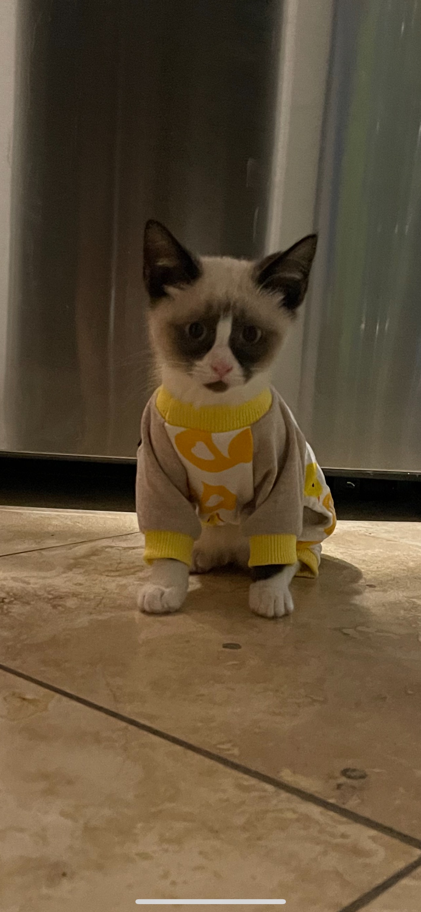

<!DOCTYPE html>
<html lang="en">
<head>
    <meta charset="UTF-8">
    <meta http-equiv="X-UA-Compatible" content="IE=edge">
    <meta name="viewport" content="width=device-width, initial-scale=1.0">
    <title>Story of Doji Cat</title>
</head>
<body>
    
</body>
</html>

<h1>Story of Doji Cat</h1>
<hr />

<p>Let me introduce Doji Cat to everyone! Doji Cat was born on the 12th of August, 2021.
    Originally his name was Capn' Crunh, but that changed immediatley after my besfriend and I saw him.
    Crazy thing is, we weren't actually looking for a cat at the momment since we both wanted a cat and 
    thought it would be best to wait until we moved in together. My bestfriend was the first one to see him 
    and fall in love with him. Shortly after, we both were carrying him and signing papers for adoption. 
    It was all so unexpected, but truly was the best decision we ever made.
   But enough chit chatting. Let me show you guys Mr.Doji Cat. Oh and his name? Got it after one of our faviorte singer, Doja Cat. </p>

   <h2>Meet Doji!</h2>
   

      <p> Let's meet this little cute kitten a bit more.</p>

  <h3>Doji's Hobbies</h3>
  <ul>
      <li>playing</li>
      <li>eating</li>
      <li>sleeping</li>
      <li>Add REPEAT!</li>
  </ul>

  <h5>Here is a bit more information about Siamese cats</h5>
<a href="https://www.dailypaws.com/cats-kittens/cat-breeds/siamese">Siamese Cat Information</a>